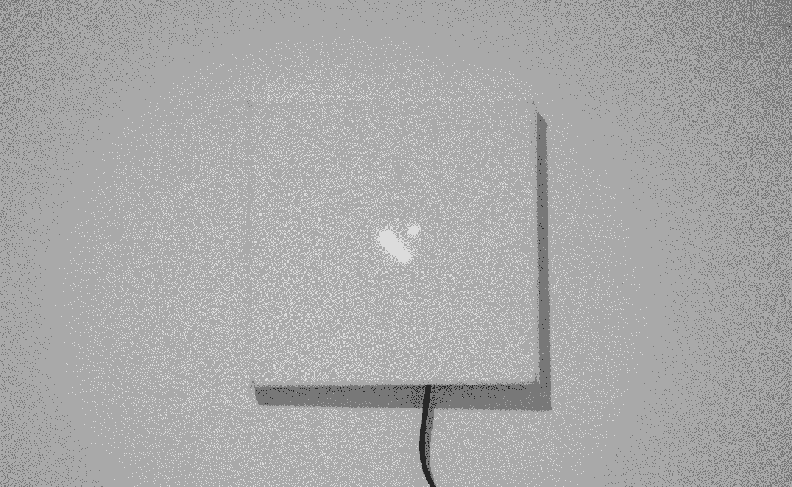

Rabbit is an experiment in “subtle technology”. An 8×4 RGB LED matrix powered by RPi Zero W is hidden beneath the canvas. When inactive, it is just a blank white square.
I'm still thinking of ways to utilise the LED matrix. I currently use it as a binary clock, but there may be more potential applications:
- Weather indicator
- Calendar
- Server status indicator
- Music visualiser
CI16Y1 3.7 2.7V 1.0P 0.1D